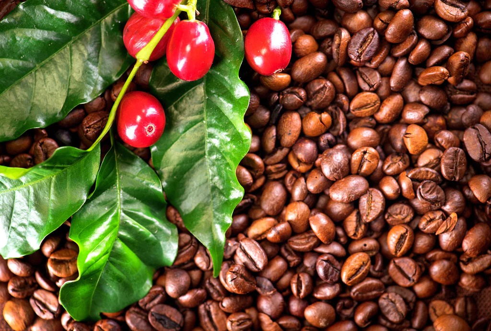

Ми пропонуємо:
- Кава
- Кавові зерна
- Крафтові суміші меленої кави
- Кава без кофеїну
- Ароматизована кава
- Спеції
- Чай
- Чорний
- Зелений
- Білий
- Трав'яні та квітучі чаї
- Ароматизований чай
- Чай з фруктовим настоєм
- Крафтові чайні суміші
Реєструйтесь і отримуйте дисконтні знижки

Що таке сорт кави
Сорт кави – це назва типу кавової рослини – подумайте про це, як про яблуні в саду: один вид дерева може давати червоні яблука, а інший – зелені яблука. Різні види - сорти - кавових рослин надають виробнику можливість вирощувати вишню, яка, як відомо, має специфічну солодкість, відтінок і тіло; Де вирощується сорт і в яких умовах, є ключовими факторами, які впливатимуть на смак його плодів.
Скільки існує сортів кави
У роді Coffea, налічується понад 100 видів, але лише два, які зазвичай культивуються для пиття: Coffea arabica та Coffea canephora (також відома як робуста).
Заглибимось в деякі з найбільш часто вживані сорти, починаючи від наших улюблених основних продуктів і закінчуючи винятковими випусками обмеженим тиражем.
| Сорт | Країна | Особливості |
|---|---|---|
| Типіка | Ефіопія | Завдяки відносно низькій врожайності, а також високій сприйнятливості до шкідників і хвороб, Typica може здатися не виграшним вибором, але завдяки чудовій якості ця рослина залишається одним із найбільш культурно та генетично важливих сортів кави арабіки. Найкраще вирощується на великій висоті, добре пристосована до холодних умов. Дає великі кавові зерна, пропонуючи солодку та чисту, фруктову, квіткову та складну чашку. |
| Бурбон | Ефіопія, Ємен | Природна мутація типіки. У 18 столітті французи перевезли на Ла-Реюньйон (раніше відомий як Іль-Бурбон), острів біля Мадагаскару. Добре росте на великій висоті, є високорослим сортом, який, незважаючи на сприйнятливість до хвороб, дає хороший урожай і видатну якість, відомий своєю солодкістю. |
| Пакамара | Сальвадор | Cорт часто домінує на змаганнях Кубка досконалості. Однак дерево може бути нестабільим від одного покоління до іншого, і рослини несуть ризик повернення назад до батьківських сортових Pacas. Pacamara часто представляє незвичайні та вражаючі поєднання з елегантною кислотністю. |
| Червоний/жовтий катуаї | Бразилія | Катуаї - гібрид Mundo Novo і Caturra, що пропонує високу врожайність і стиглі плоди червоного або жовтого кольору. Цей сорт має соковиті лимонні характеристики, збалансовані шоколадними відтінками. |
| Обата | Бразилія | Розроблена Інститутом агрономіко (IAC) штату Сан-Паулу в Кампінас, Бразилія, і випущена в 2000 році, ця карликова рослина має високу стійкість до іржі листя, виробляючи великі боби, які постійно дають чисту та збалансовану чашечку з делікатною, але виразною кислотністю. |
| Геша | Ефіопія, Панама | При низькій врожайності і ламких гілках рослина мало зацікавило фермерів, незважаючи на свою морозостійкість і толерантність до іржі листя. Все змінилося після конкурсу Best of Panama у 2004 році. Кава отримала надзвичайно високі оцінки та побила тодішній рекорд аукціонної ціни зеленої кави, досягнувши понад 20 доларів за фунт. Відомий ніжними квітковими нотами жасмину та легкими смаками кісточкових фруктів. |
Які є різні типи кавових рослин?
- Coffae Arabica (кава арабіка)
- Coffea Robusta (кава робуста)
- Кава Liberica
- Кава Excelsa
З двох найбільш поширених сортів кави арабіка, як правило, є більш чутливою з двох, зростаючи на висоті та на горбистих ландшафтах.
Робуста набагато витриваліша рослина, її можна вирощувати на рівнинних низинних землях.
Майже вся спешелті кава - це
Різниця у смаку та якості двох сортів кави може бути величезною.
Кава арабіка, хоча і є складнішою у вирощуванні рослиною, має унікальні характеристики, які можуть відрізнятися залежно від регіону та сорту.
Хоча робуста може мати різні характеристики, їй зазвичай не вистачає кислотності та солодкості, якими володіє кава арабіка, але, як правило, вищий вміст кофеїну.
Робуста зазвичай використовувалася в сумішах, щоб надати каві глибини, тоді як зерна арабіки додавали солодші нотки.
Хоча робуста все ще широко використовується в багатьох комерційно вироблених сортах кави, для більшості незалежних обсмажувачів або спеціалізованих кав'ярень єдиним способом є арабіка.
Через складність у виробництві та метушливість щодо того, де вона любить рости, арабіка історично була досить дорогою, розкішною кавою.
Незважаючи на те, що вона, як і раніше, вимагає вищої ціни, ніж кава робуста в цілому, порівняльне співвідношення вартості за останні роки знизилося.